| 日付 | 2012年5月13日（日） |
|---|---|
| 山域 | 御坂･天子山塊 |
| メンバー | 家族（妻、長女・1歳） |
| 山行形態 | 子連れ日帰り |
| アクセス | 車 |
| ルート (Map) | 三ツ峠登山口→毛無山→三ツ峠山→三ツ峠登山口 |
家族全員あまり体調が良くないため、近場で簡単に登れる山を探してみることにする。
本日は快晴予報で、良い展望が期待できそうなので、
久々に富士山の展望を求めて三ツ峠山に行ってみることにする。
過去に三ツ峠山には二度登ったが、何れもロングルート。
今回は山の中腹まで車で行ける、最もよく使われているルートを歩く。
8:35 三ツ峠登山口到着。標高1290m。
駐車場は車でいっぱい。車道脇に車を停める。
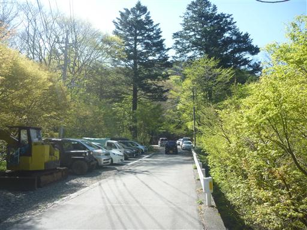
登山道は林道のような広い道から始まる。
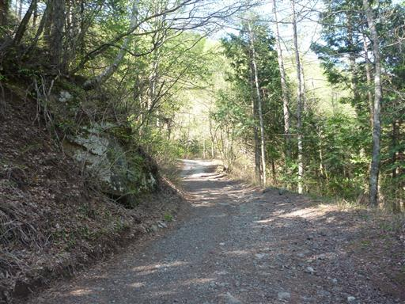
道端にショベルカーが放置されている。

道にはキャタピラの轍が残っている。どこまで登っても林道のような道が続く。
登山道が短いのはともかく、ここまでつまらない道だとは思っていなかった。
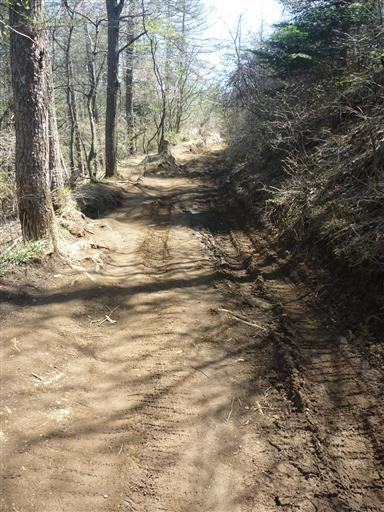
道端に霜柱ができている。この季節でも夜は冷えるのだろうか？
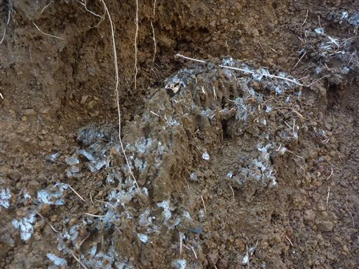
山頂直下の展望地に到着。ここに到着するまでほとんど林道歩きだった…
今日は快晴で富士山が美しい。
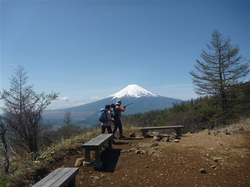
三ツ峠山の最高峰・開運山に向かう前に木無山に寄ってみることにする。
このピークも三ツ峠山の中の一峰だ。
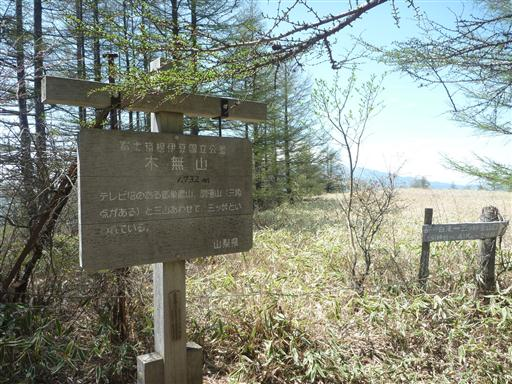
この付近にはお花畑があると地図に記載されていたので来てみたのだが、見えるのは笹原のみだ。
ロープで保護はされているのだが、いったいどの季節になれば花が咲くのだろう…？
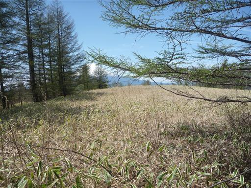
開運山と木無山の間にある露岩に立ち寄ってみる。
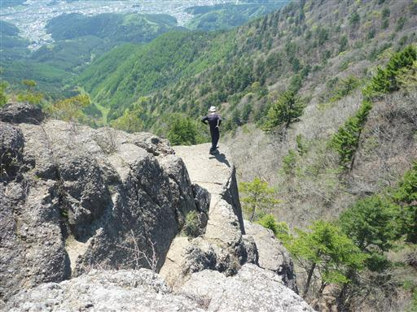
丹沢方面を望む。
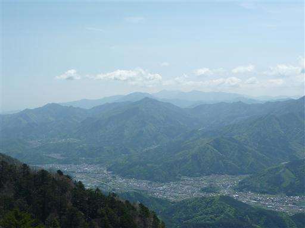
花壇のように土が残ったところにミツバツチグリが咲いている。
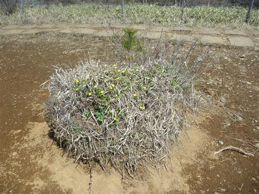
山頂直下には何軒かの小屋が建っている。
テーブルとベンチもあり、多くの登山者でにぎわっている。
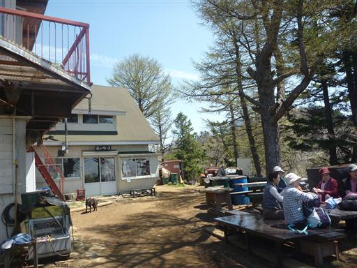
これでは飲み物が買えない…
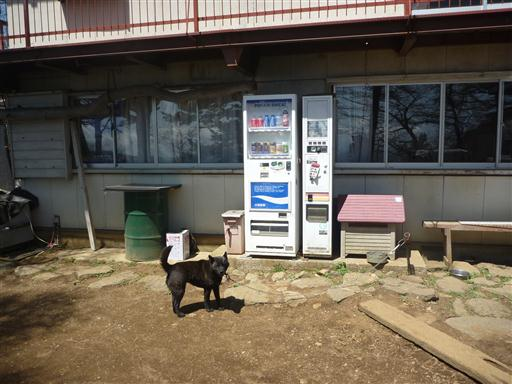
西方には南アルプスの山々が連なっている。南アの主要なピークはほぼ全て見える。
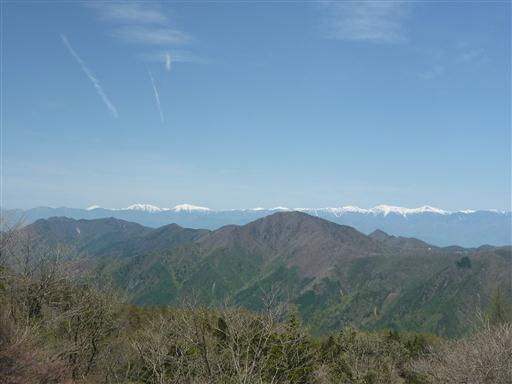
右手には八ヶ岳、その左に薄ら見えるのは北アルプスだ。

目の前に電波塔の建つ三ツ峠山の山頂が見えてきた。
山頂直下の岩壁にはロッククライミングをしている人がいる。
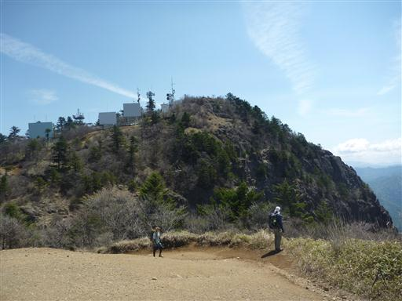
10:28 三ツ峠山山頂到着。標高1785m。

山頂からは素晴らしい展望が広がる。真正面に見えるのは富士山。
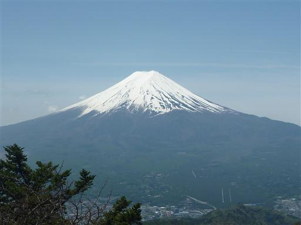
そして御坂山塊と南アルプスの山々が見えている。完璧な快晴だ。
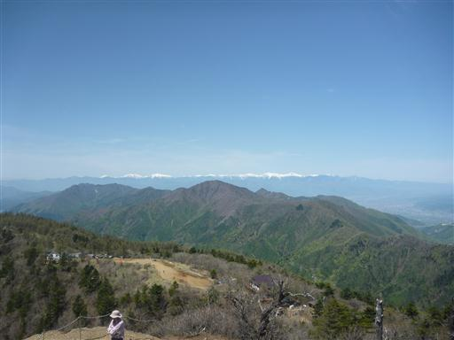
狭い山頂で昼食をとっていると、いつの間にやら大混雑。
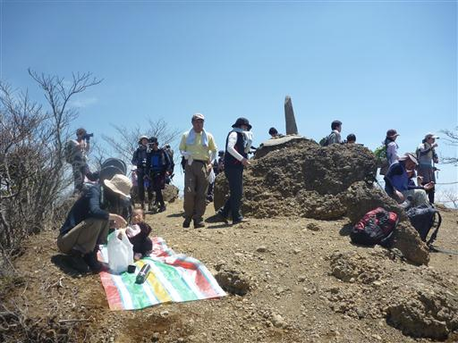
山頂直下の階段であんよの練習。
この辺りは非常に滑りやすく、下山時にこける人が続出している。
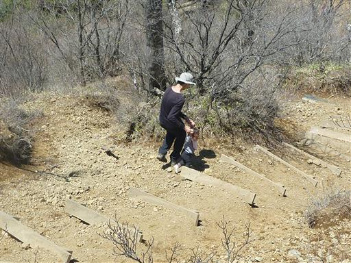
下山は登りに使った道をそのまま下るが、
途中ガードレールの脇から尾根道に入っていく。
分岐点に案内標識は出ていないが、ところどころにピンクのリボンがついている。
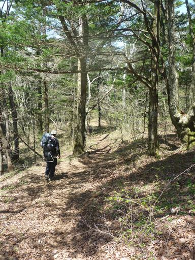
シロバナノエンレイソウが咲いている。
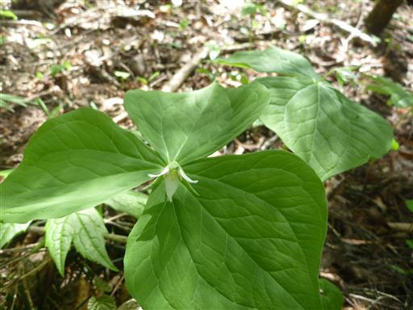
色々な種類の小さな葉が林床を覆っている。
林道と違ってよい道があるではないか。
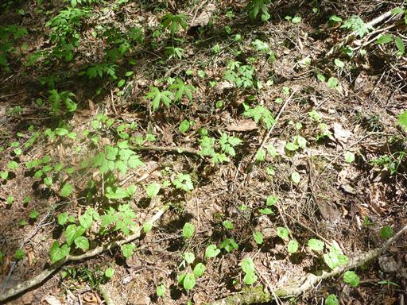
12:47 三ツ峠登山口到着。
この登山道は駐車場の奥から始まっている。案内標識は何もなく踏み跡も細い。
どおりで登り始めのときには、この道に気づかなかった訳だ。
せっかく良い道なのに、この道を歩いて欲しくないのだろうか…？
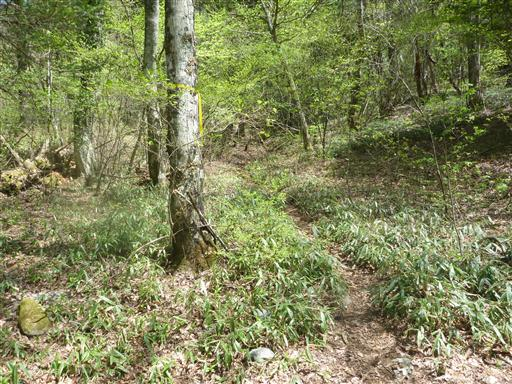
帰りに富士風穴に寄ってみることにする。辺りは鬱蒼とした富士の樹海が広がっている。
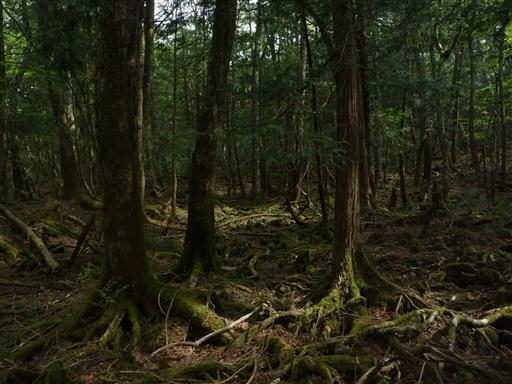
車道から洞窟まではわずかな距離なのだが、子供の足だと時間がかかってしょうがない。
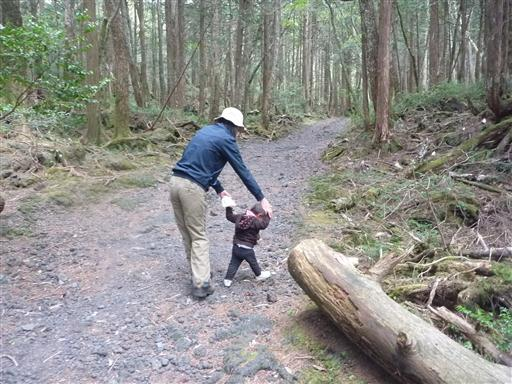
富士風穴に到着。入ってみようとしたが入口付近が凍り付いていて非常に危険。
夏にならないと入口付近の氷は解けないようだ。入洞をあきらめて帰ることにする。
歩き足りないコースだったが、展望は最高の山行だった。
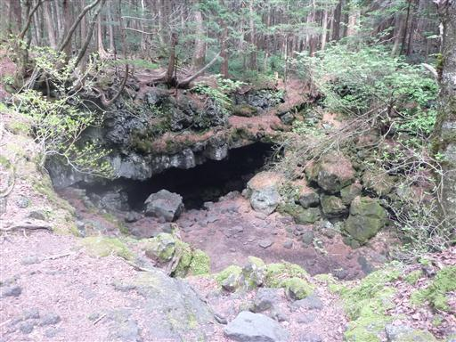